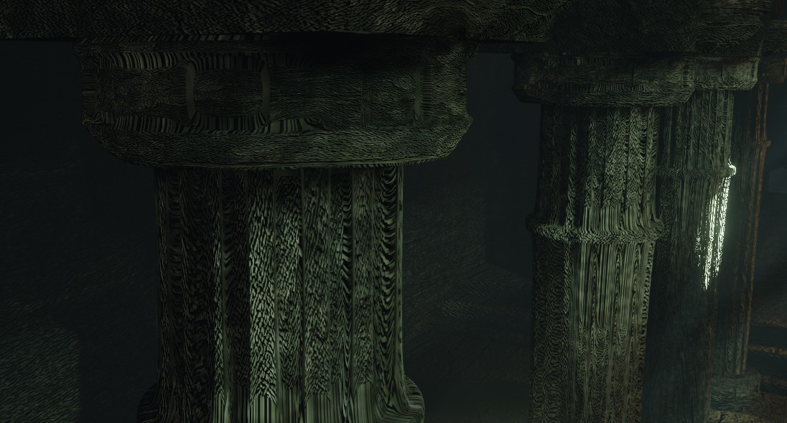
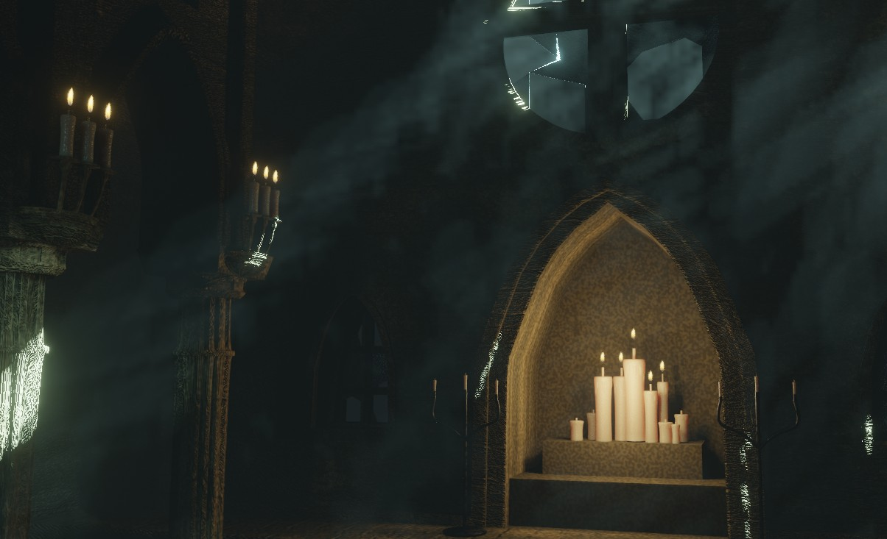
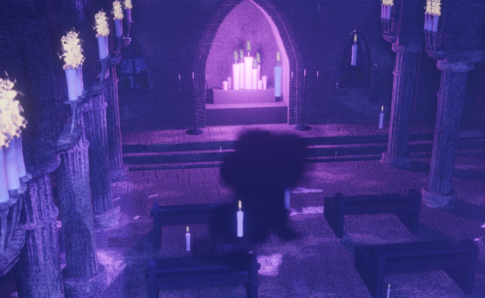

SPACE VISUAL
静寂の中に漂う光と陰の余韻
CONCEPT
古い教会に射し込む柔らかな光と、静けさの中にある緊張感を表現した作品。 石材の重厚さ、空気中に漂う微細な光、陰影の落ち方を丁寧に観察し、 空間としての“温度”を感じられるようにまとめました。 物語を語りすぎず、見る側に余白を残す構成を意識しています。
TECHNIQUE
石材の質感づくりでは、表面のざらつきと光の吸収を再現するため、 ノーマルとラフネスを細かく調整しています。 窓から差し込む光は、ボリュームライトを弱めに設定し、 光の筋が自然に見える密度を繰り返しテストしました。 カメラは低い位置からわずかに上向きにし、 天井の広がりと空間の奥行きを強調しています。
GALLERY


